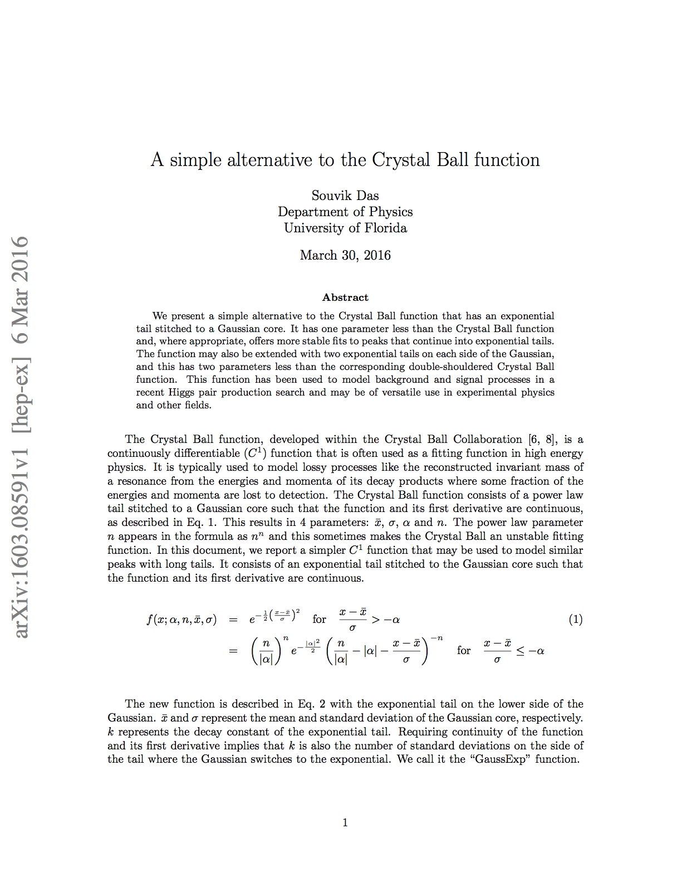

|
In the course of searching for Higgs pair production, I developed an alternative to the Crystal Ball function that has an exponential tail, instead of a power law tail, stitched to a Gaussian core. It has one parameter less than the Crystal Ball function and, where appropriate, offers more stable fits to peaks that continue into exponential tails. The function may also be extended with two exponential tails on each side of the Gaussian, and this has two parameters less than the corresponding double-shouldered Crystal Ball function.
I have called the single-shouldered version of the function the GaussExp function, and the double-shouldered version the ExpGaussExp function.
I describe it the Arxiv paper 1603.08591 linked on the right. |
 |